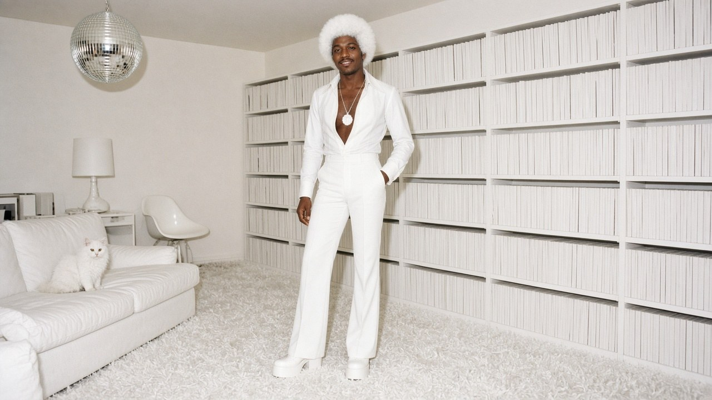
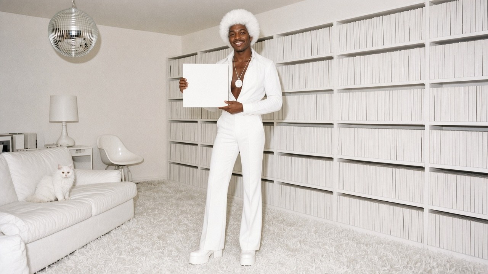
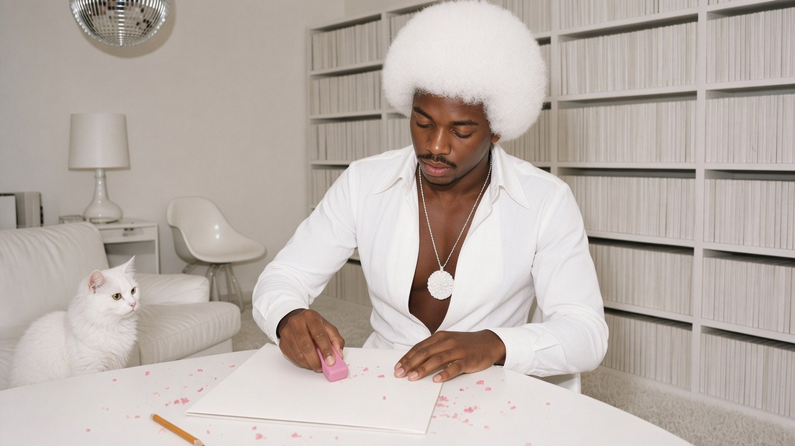
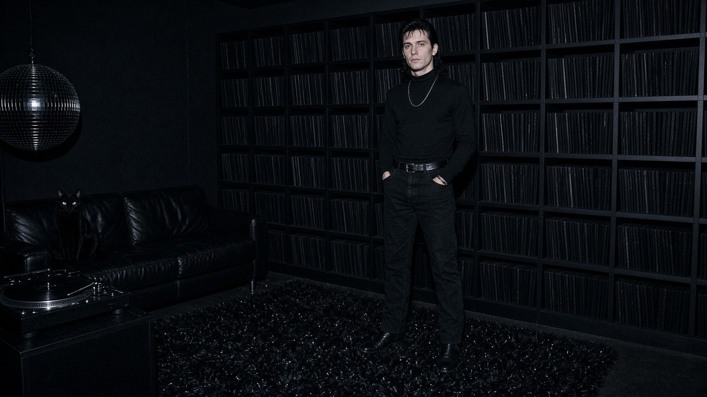
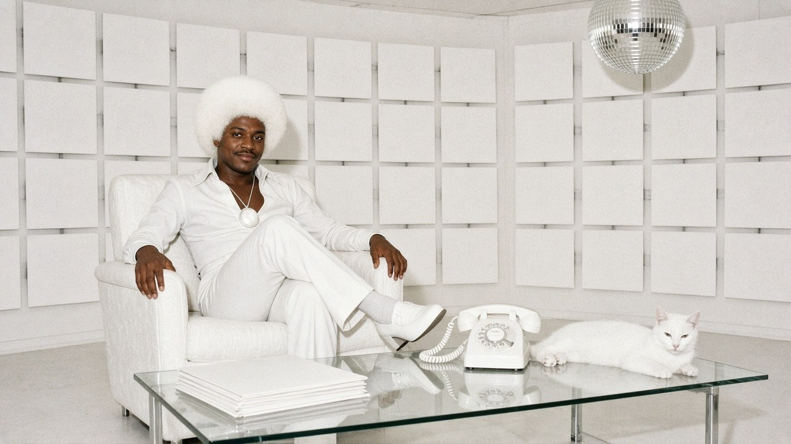

Vinyl desk · The interview ·
“Surfaces Should Be White”
Clarence Langston of North Fudgeley, Ohio, still dresses like 1977, owns 5,000 copies of the Beatles’ White Album, and keeps a best friend who only collects the Black Album.

Clarence opens the door of his North Fudgeley flat and we briefly lose him in it. Everything is white: the shag, the sofa, the turntable, the cat, the disco ball, and Clarence, whose afro he has dyed to match. He offers us a seat. We sit carefully.
Clarence, how many White Albums do you own?
Five thousand and twelve. I bought twelve more this morning. Vern at Spin City keeps a box under the counter now. He rings me when a copy comes in. Sometimes he rings me when it doesn’t, just to check I’m still breathing.

So why this album?
Because they made one that is white. A whole album. No pictures of anybody’s face, no silly colours, no motorcycle. I respect the commitment. I often wonder why other albums bother with pictures at all. A sleeve is a surface. Surfaces should be white.
“A sleeve is a surface. Surfaces should be white.”
What’s in the rest of the flat?
White. The carpet, the curtains, the crockery, the cat — her name is Snowball, she came with the colour — the telephone, the turntable, which I own for the look. I dance to the radio. The radio is white. The calendar still says 1977. I like that calendar.
And the afro?
Bleached. Twice a month at Darlene’s cousin’s salon in Upper Fudgeley. It burns a little. Beauty often does. When I walk into Vern’s, the bell doesn’t ring for me. The light does.

Is that a rubber?
Pink. Soft. Block. For the smudges. Guests leave fingerprints. Raymond left a whole hand once. The trouble is when I sharpen the pencil afterward — the black from the graphite gets everywhere. I keep a white eraser for the pink eraser. It’s a system.

Who’s Raymond?
My best friend. He only collects the Metallica record that came out this month — the black one. Five thousand copies, last I checked. He loves that they finally made an album that is black. We’ve been waiting for someone to do that. I told him white got there first. He says black is a classic.
Do you visit each other?
We can’t. I disappear in his flat and he disappears in mine. Last time he came here we spent forty minutes looking for him on the sofa. We found him by the smell of his leather jacket. Last time I went there, Snowball followed me and we lost her for a weekend. She came home looking very sophisticated.
Who’s winning?
We argue every Saturday at Vern’s. He says black is deeper. I say white is cleaner. Vern has started stocking both colours behind the counter and ringing us on different phones. Mine is white. His is black. The phones, I mean. Vern’s is beige. We don’t trust him.
Advertisement · fake

Can you find anything in here?
Eventually. Keys are a problem. So is Raymond, when he visits. Also the milk. Everything in the fridge is white. I once drank a bottle of glue. It was fine. Permanent, actually.
Do you ever buy other records?
I tried a white label promo once. Too much information on it. Letters are a colour, if you think about it. Black. I returned it. Vern gave me another White Album and a free coffee. The coffee was wrong. I drink milk. Raymond drinks black coffee. We are very consistent people.
What’s your favourite song on the album?
The sleeve is extraordinary. Truly. The spine especially — there’s a shade on the early pressings that’s slightly warmer, more of an eggshell. Have you noticed the way the cardboard takes the light? Snowball prefers the afternoon sun on the east wall of sleeves. Clever cat.
Any track. Any title at all.
…The long one. Track… three? Is there a track three? Listen, can we talk about the corners? Corner wear is a tragedy. Grey, again. I don’t do grey.
We asked Raymond the same question.
I know. He said “the quiet bits between the songs, where it’s blackest.” Then he changed the subject to his sofa. We compared notes at Vern’s. Notes about the cardboard.
Any advice for our readers?
Support your local record shop. Vern’s putting in white shelves on one side and black shelves on the other, and he says it’s thanks to the two of us. And if you buy an album for the sleeve, buy a lot of them. Consistency is a virtue.
Fine print: Clarence and Raymond are invented. The Beatles’ White Album (1968) and Metallica’s Black Album (1991) are real; five thousand copies each is our number, not anyone’s. No Beatles or Metallica photographs, logos or sleeve designs appear in our pictures — every sleeve here is a blank stand-in. Clarence’s calendar is also fine. No records were harmed in the making of this interview. Several bottles of bleach were. Raymond brought his own dye.
← Back to the true tales